Принужденные (установившиеся) и свободные составляющие переходного процесса. Постоянная времени цепи. Переходные процессы в R-L-C цепи.
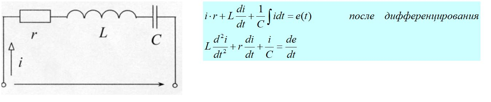 Известно, что общий интеграл такого уравнения
равен сумме частного решения и общего решения неоднородного уравнения 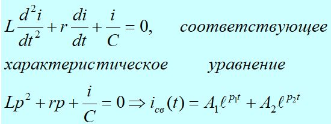 Физически это означает,
что приложенное напряжение к цепи равно нулю. Ток в такой цепи поддерживается за
счет запасов энергии в катушке индуктивности и конденсаторе, так как эти запасы
ограничены, а в цепи всегда присутствует сопротивление, на котором происходит
рассеяние энергии, то с течением времени этот ток становится равным
нулю. Полный
переходный ток в цепи равен сумме установившегося тока и
свободного
Частное
решение выражает установившийся режим, задаваемый источником, а общее
решение определяет поведение цепи при отсутствии внешних источников
электрической энергии (свободные составляющие токов и напряжений).
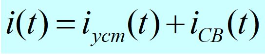
Анализ переходных процессов в цепях с одним
реактивным элементом классическим методом. Постоянная времени
цепи.
Исследование переходных процессов в линейных цепях ведется с помощью линейных интегро-дифференциальных уравнений с постоянными коэффициентами. Классический метод, заключающийся в непосредственном интегрировании интегро-дифференциальных уравнений состоит из этапов:
-
Составляется система уравнений для схемы после коммутации на основании первого и второго законов Кирхгофа.
-
Выполняется решение уравнений относительно одной переменной (целесообразно переменную выбрать так, чтобы остальные переменные определялись через нее последовательным дифференцированием, а не интегрированием).
Из курса математики известно, что общее решение линейного неоднородного дифференциального уравнения равно сумме частного решения неоднородного уравнения и общего решения однородного уравнения
Переходный процесс в активно-индуктивной цепи
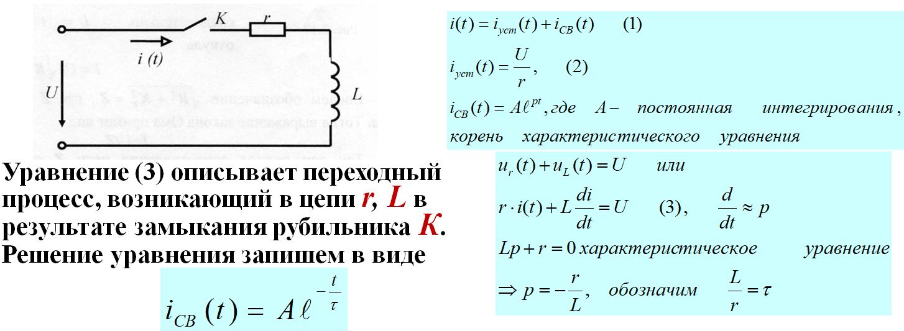
τ - постоянная
времени цепи, характеризует время уменьшения начального значения свободной
составляющей процесса в 2.72 раза. Полагают, что за (3-5)τ-переходный процесс
заканчивается.
Во время переходного процесса накапливается энергия магнитного
поля в индуктивной катушке и тепловые потери в резисторе
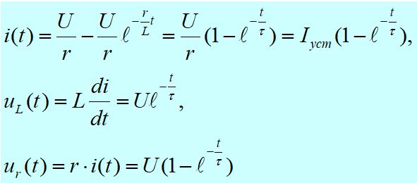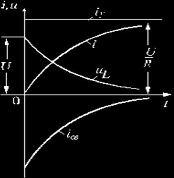
Короткое замыкание цепи r, L
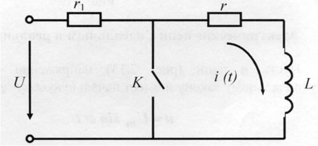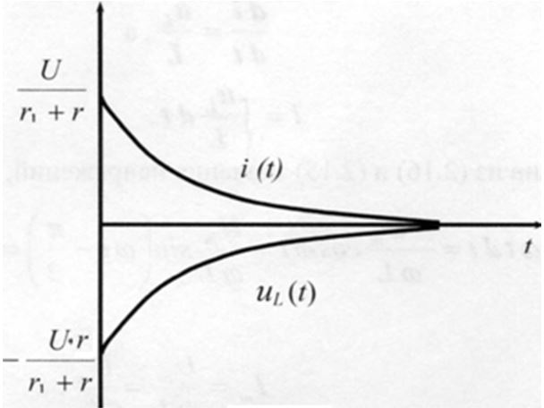
В контуре r, L начнется
переходный процесс, который можно описать дифференциальным уравнением
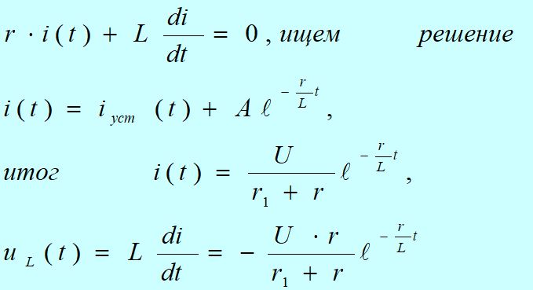
Во время переходного процесса (при коротком замыкании) вся энергия магнитного поля в катушке переходит в тепло на резисторе г
Переходный процесс
в активно-емкостной цепи. Заряд конденсатора
Пусть конденсатор до
включения не был заряжен, т.е. uс(о) = 0. После коммутации уравнение второго
закона Кирхгофа для контура имеет вид: ur(t)+uc(t) = U
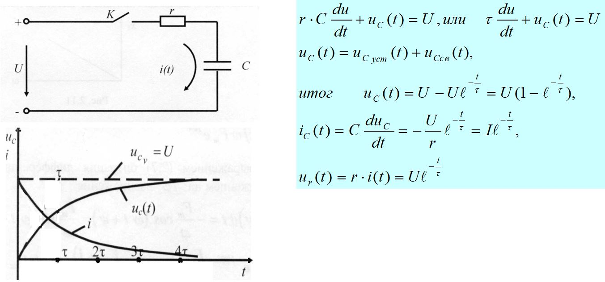,
Напряжение на зажимах
С и его заряд нарастают по тому же закону, что и ток в цепи r, L при включении
ее под постоянное напряжение.
Ток же при включении сразу получает
значение U/r, т.к. момент t=0 напряжение на зажимах конденсатора равно
нулю, и ток в цепи определяется лишь напряжением U и сопротивлением г. В
дальнейшем напряжение ис
постепенно возрастает, и ток в цепи
убывает по экспоненциальному закону
Разряд конденсатора
Предположим, что конденсатор был заряжен от
источника постоянного
напряжения. В цепи в установившемся режиме до
замыкания ключа К ток не протекает, и напряжение на конденсаторе равно
напряжению источника U.
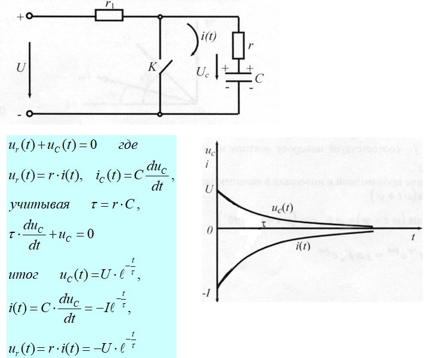
Пусть
в какой-то момент времени замыкается ключ К, электрическая связь между контуром
источника и контуром r, С теряется и в последнем начнется переходный процесс,
т.е. конденсатор будет разряжаться на сопротивление r
Электрические процессы
при разряде конденсатора заключаются в том, что энергия
электрического
поля за время переходного процесса
Постоянная времени цепи
Постоянная времени τ – это время, в течение
которого свободная составляющая процесса уменьшается в е = 2,72 раза
по сравнению с начальным значением
Постоянная времени τ
определяет время переходного процесса tпп,
:
τпп=(3...5)τ. Постоянная времени τ находится по
формулам:
τ = r • С
или τ = L/r
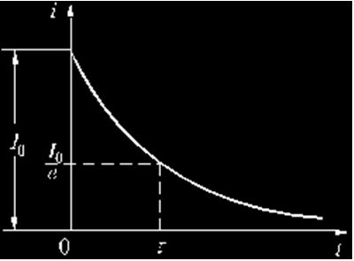
Пример: если конденсатор с емкостью С = 100 мкФ
разряжается через сопротивление г =100 Ом, то τ = 100 · 10-6- ·100 = 0.01 с
Если тот же конденсатор оставить заряженным и отключенным от остальной цепи,
то он будет медленно разряжаться через свое сопротивление утечки. Пусть это
сопротивление составляет 108 Ом. Тогда τ = 100 • 10-6 ·108 = 104 с = 27,8 час,
т.е. конденсатор с такой хорошей изоляцией сохранит через сутки примерно одну
треть своего начального заряда
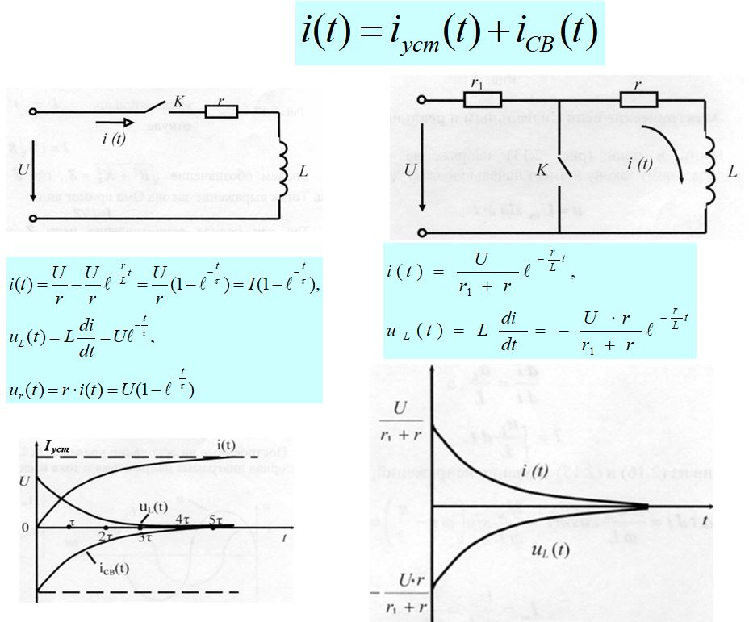
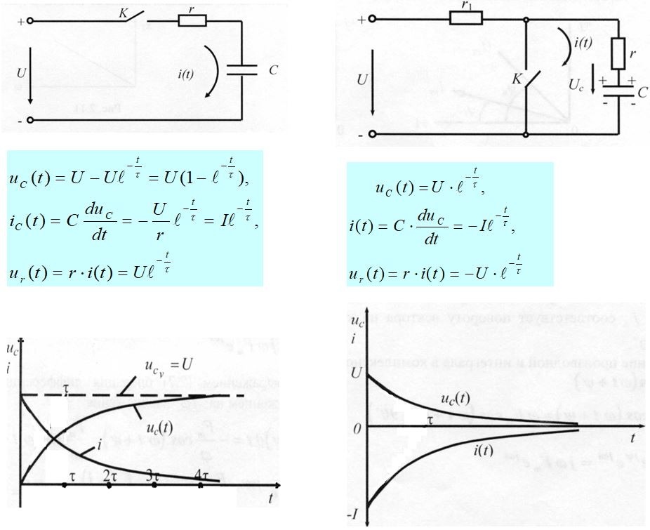
Переходные процессы в R-L-C цепи
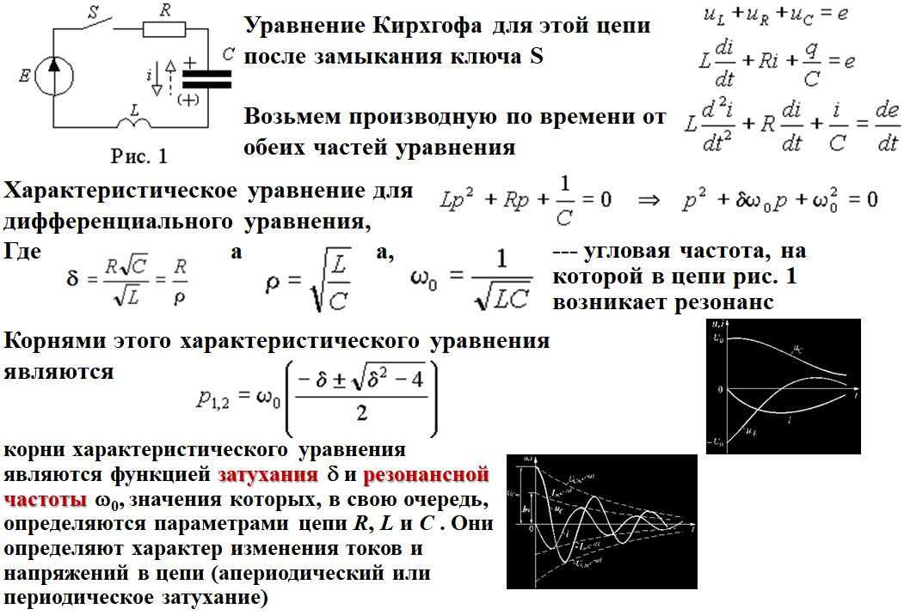
Перейти к тесту